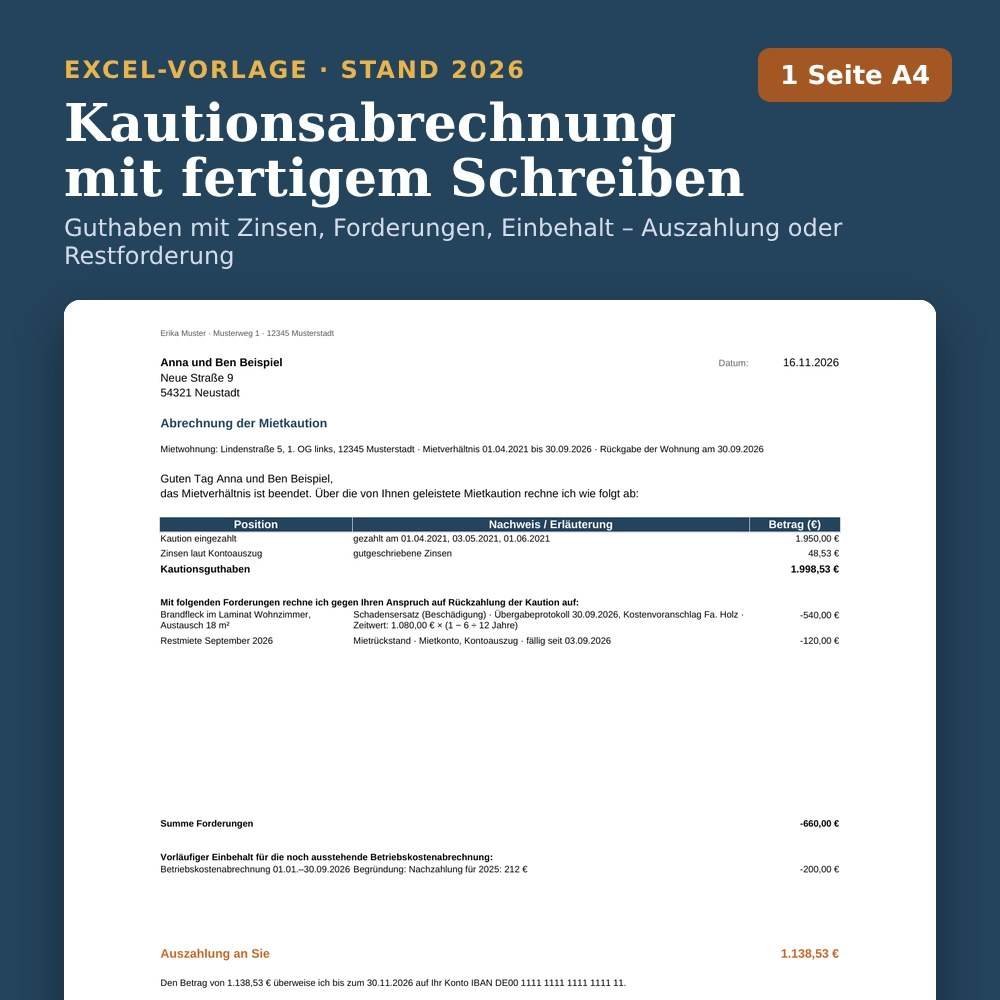
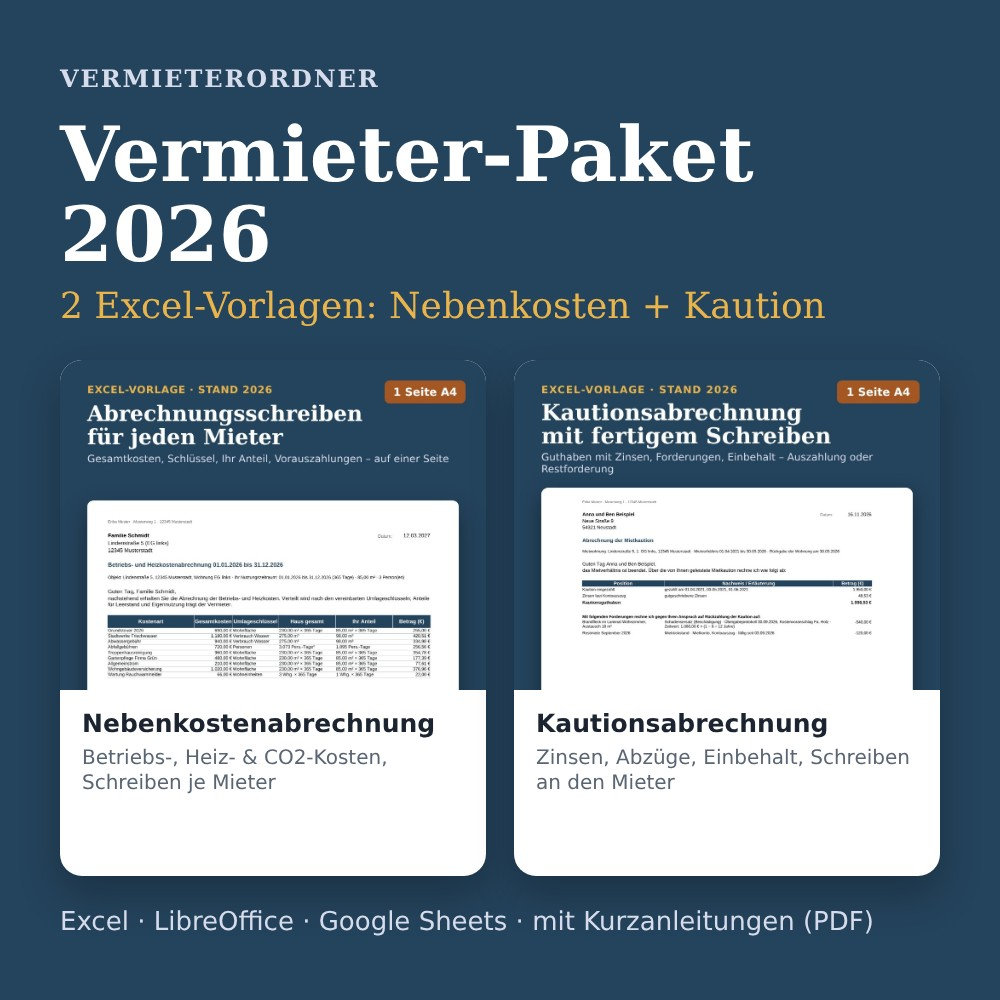

Nebenkostenabrechnung
Betriebs-, Heiz- und CO2-Kosten je Mieter verteilen – mit fertigem Abrechnungsschreiben.
- Bis zu 12 Mietverhältnisse
- Alle 17 Kostenarten
- Heizung, Warmwasser, CO2
14,90 €Ansehen
Excel-Vorlage und kostenlose Rechner für private Vermieter mit ein paar Wohnungen: Betriebskosten, Heizung, Warmwasser und CO2-Aufteilung je Mieter – mit fertigem Abrechnungsschreiben und Prüfungen gegen typische Fehler.
Für private Vermieter von Wohnraum – je Vorlage eine Aufgabe, sauber gerechnet und mit fertigem Schreiben.
Betriebs-, Heiz- und CO2-Kosten je Mieter verteilen – mit fertigem Abrechnungsschreiben.

Kaution mit Zinsen abrechnen, Schäden zum Zeitwert ansetzen – mit fertigem Schreiben an den Mieter.
Einzug und Auszug Raum für Raum protokollieren – mit Mängelliste, Zählern, Schlüsseln und Unterschriftsfeldern.
Mieteinnahmen, Werbungskosten und AfA je Objekt sammeln – mit Summen für die Anlage V und 12 Prüfungen.

Alle 4 Excel-Vorlagen in einem Download: Nebenkostenabrechnung, Kautionsabrechnung, Wohnungsübergabeprotokoll und Anlage V 2026.
Einmalzahlung, kein Abo. Preise inkl. gesetzlicher MwSt., sofern anfallend.

Die meisten privaten Vermieter haben eine, zwei oder fünf Wohnungen – und keine Hausverwaltung. Einmal im Jahr steht die Nebenkostenabrechnung an, beim Mieterwechsel Übergabe und Kaution. Genau dafür sind die Vorlagen gebaut: ausfüllen, prüfen lassen, Schreiben ausdrucken.
Vermieterordner ist ein kleines Angebot von Felix Merklinger-Lötzsch aus Aßlar in Hessen. Rechenwege und Hinweise stützen sich auf Gesetzestexte und BGH-Urteile; die Quellen stehen in jedem Ratgeber.
Direkt nach der Zahlung über den Download-Link auf der Bestätigungsseite und zusätzlich per E-Mail von Digistore24.
Die Nebenkosten- und die Kautionsabrechnung laufen in Microsoft Excel (Windows/Mac), LibreOffice Calc und Google Sheets – in Google Sheets fehlen der Blattschutz und einige Farbmarkierungen, die Berechnungen stimmen trotzdem. Welche Programme für jede Vorlage gelten, steht auf der jeweiligen Produktseite. Zum Drucken empfehlen wir Excel oder LibreOffice; Sie können auch als PDF speichern.
Für private Vermieter von Wohnraum in Deutschland. Für Gewerberaum sind sie nicht gebaut. Was jede Vorlage genau abdeckt, steht auf der jeweiligen Produktseite.